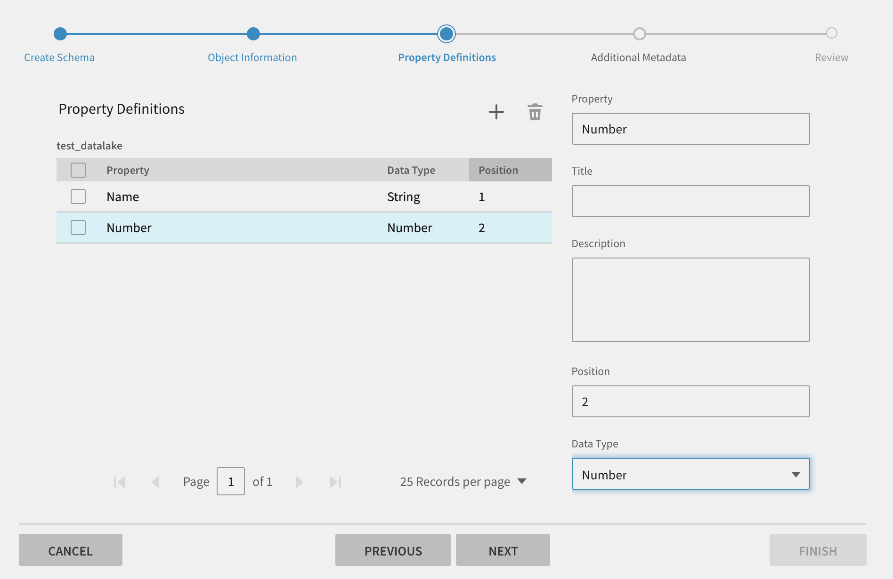
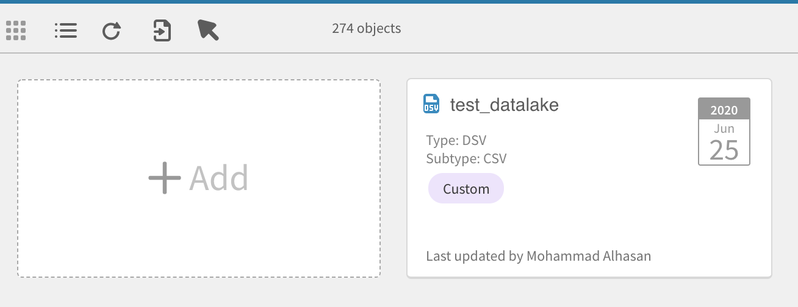
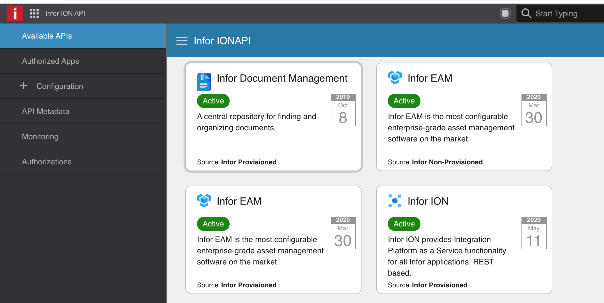
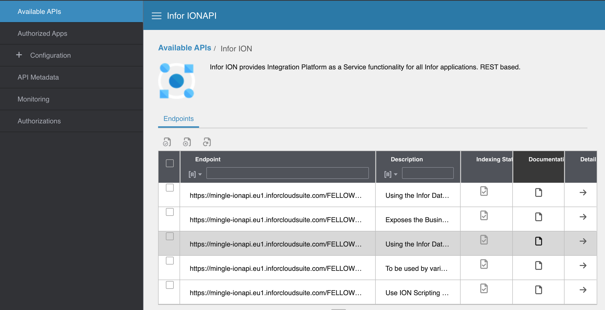
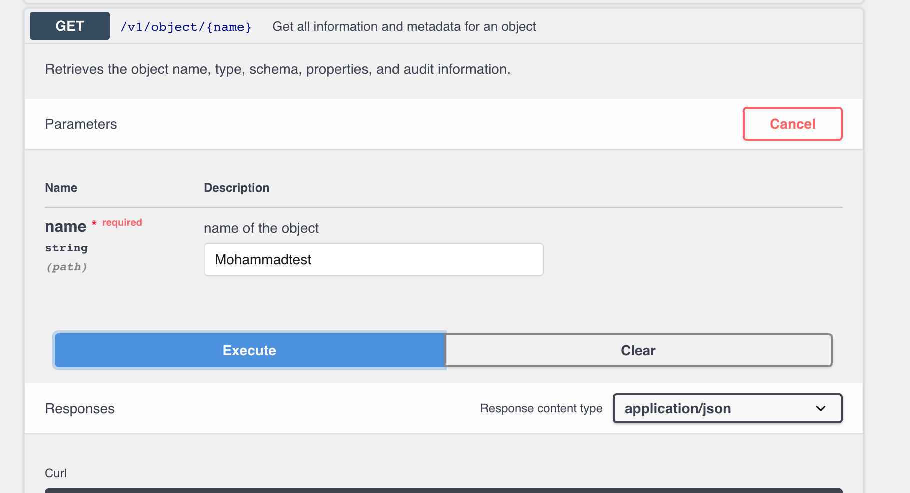
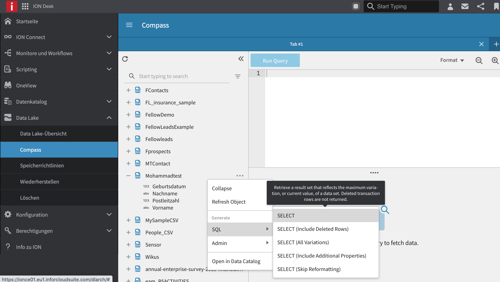
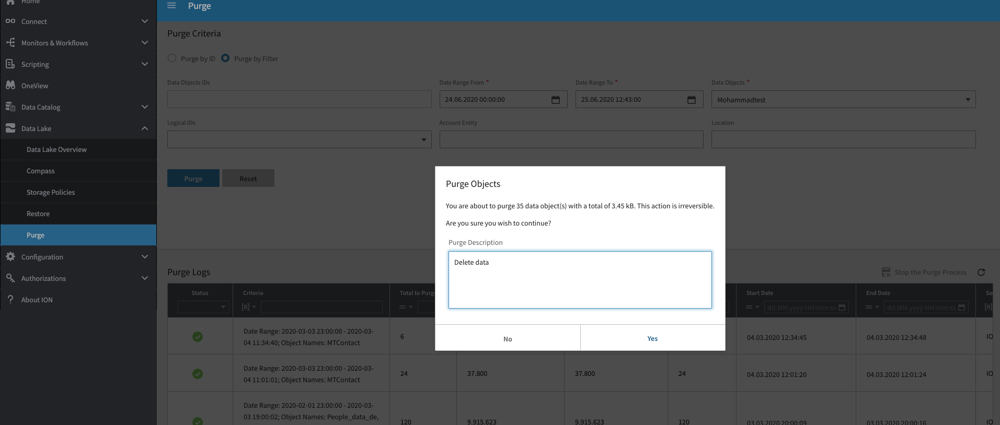
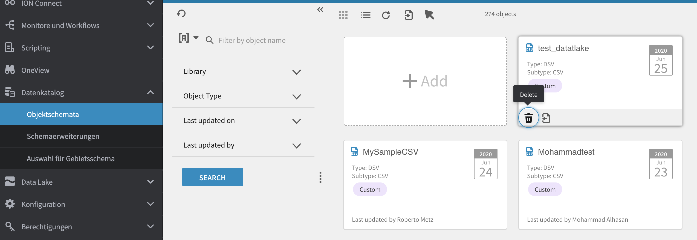

Data Lake¶
Description Explain how to upload a CSV file to the data lake and query in inforion.
In this explanation, we will refer to:¶
Create object and upload data
Data query
Delete data
Delete object
How to create a new project and Upload data in datalake:
Open your account, click on the App Menu, then on ION Desk, click on Status overview, then Data Catalog, then >>”Object Schemas” then see all projects. Click the Create button >> “Add New Object”.
Example:

Here it shows you a set of options that you need:
Upload data you want to work with CSV, click on next.

Then fill in options “Object Information”

Then fill in options “Property Definitions”
{kind=link}
Here review and then finish

Here you see your project
{kind=link}
Project testing:
To verify that the project is working correctly: Open your account, click on the App Menu, then on Infor IONAPI, then >>”Infor ION”
Example:
{kind=link}
Click on the Document you want to test, for example Infor DataCatalog Rest AP
{kind=link}
Here in the documentation you find several test options

Example: Get all information and metadata for an object
{kind=link}

How to Data query in inforion:
Open your account, click on the App Menu, then on ION Desk, click on Status overview, then Data Lake, then >>”Compass” then see all CSV >> SQL >> SELECT
{kind=link}
>> Run Query

Example: where “id” is not null

How to delete data in inforion:
click on the App Menu, then on ION Desk, click on Status overview, then Data Lake, then >>”Purge” >> Purge by ID or Purge by Filter
Select the date on which you want to delete the data
Select the object name
{kind=link}
Click on Purge >> YES and the data is removed.
{kind=link}
How to delete object in inforion:
How to remove the project,click on the App Menu, then on ION Desk, click on Status overview, then Data Catalog, then >>”Object Schemas” Find the project you want to delete. Click on Delete >> YES and the project is removed.
{kind=link}